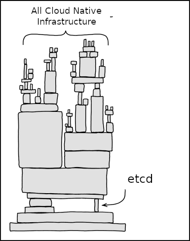
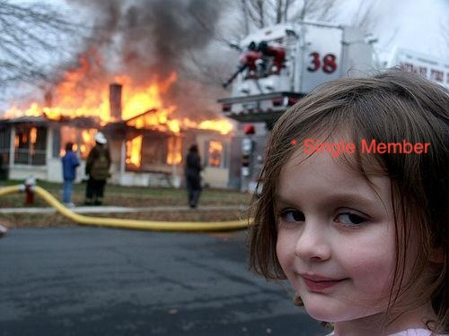

Running tens of thousands of etcd clusters in production
etcd-druid . etcd-backup-restore . etcd-wrapper
Kubernetes Bangalore Meetup . VMware, Bengaluru . 26 July 2026
Before we start
Raise your hand if…
What is etcd
etcd is the heart of Kubernetes.
A strongly-consistent, distributed key-value store. The single source of truth for your entire cluster.
Everything is a write into etcd.

Gardener
Kubernetes Clusters as a Service.
Gardener manages Kubernetes clusters the way Kubernetes manages pods.
Gardener at scale
Tens of thousands of control planes. Twice as many etcd clusters.
The journey begins / 2018
Gardener's first two requirements.
No tool fit, so we built one co-located with etcd. That is etcd-backup-restore.
Restoration / the first problem
Restore from the last full.
The gap: everything written after the last full snapshot is gone.
Taking fulls more often costs storage and loads etcd, hurting performance.
There has to be a cheaper way to cut the loss.
Delta snapshots
Full is the baseline. Deltas are the changes since.
Restoration / with deltas
Latest full plus every delta since. Minutes of loss, not a day.
The win: restore replays the latest full and every delta after it, cutting the loss to the delta interval.
More small objects means the bucket grows fast, so garbage collection prunes what recovery no longer needs.
Scheduled defragmentation
Deletes/Updates leave holes. Defrag reclaims the space.
The risk: a fragmented db grows against its quota and etcd can trip a read-only alarm, freezing the cluster.
The operator runs defrag on a cron, one member at a time, non-leader first, so quorum is never at risk.
The turning point
Everything looked good. So what was the problem?
exits. stops watching.
Great at provisioning. But it does not watch, reconcile, or heal.
Managing is the real moat.
What actually needs
That loop has a name: an operator.
What Gardener needed
A Kubernetes-native operator for etcd.
That is etcd-druid.
etcd-druid / the reconcile
One Etcd resource in. A running, backed-up cluster out.
The single member

Simple and fast, until it wasn't.
HA support
What HA had to handle.
- Scale-out via learner mechanismnon-voting until caught up
- PVC corruption of a memberremove, re-add as learner, sync from leader, promote
- Quorum-aware maintenanceleading backup-restore orchestrates, one member at a time
Scale out 1 to 3, one member at a time
A member's volume corrupts, then rejoins
Snapshots always run on the leading backup-restore
The Etcd resource / section by section
- metadataname, namespace
- replicascluster size, odd for HA
- storagedata volume capacity
- etcdquota, metrics, defrag schedule
- backup.storeany cloud object store
- snapshot policyfull, delta, garbage collection
etcd-main.yaml
apiVersion: druid.gardener.cloud/v1alpha1 kind: Etcd metadata: name: etcd-main namespace: shoot--proj--a spec: replicas: 3 storage: capacity: 10Gi etcd: quota: 8Gi metrics: basic defragmentationSchedule: "0 */3 * * *" backup: store: provider: aws container: gardener-etcd-backups prefix: etcd-main fullSnapshotSchedule: "0 */24 * * *" deltaSnapshotPeriod: 5m garbageCollectionPolicy: Exponential
Live demo
Enough slides. Let's see if it works.
Roadmap
Where this is going.
In production
Running where it matters. Adopted in production.
Governed by the NeoNephos Foundation under the Linux Foundation Europe, with an active maintainer community.
Getting started
One manifest to start. A safe path to migrate.
New cluster
Install etcd-druid, apply one Etcd resource, and you have a backed-up HA cluster. The same manifest works on any supported cloud.
$ kubectl apply -f etcd-main.yaml
Already running etcd?
Use bootstrapWithExistingCluster: druid brings up members alongside your existing cluster, you remove the old members, and you are now druid-managed.
Migrate with zero downtime.
Adopt etcd-druid / migrate an existing cluster
Already running etcd? Bring it under druid, with zero downtime.
Declare your live members in spec.etcd.bootstrapWithExistingCluster. The druid-created member joins the running cluster over the peer protocol and syncs. No snapshot restore, no downtime.
Get in touch
Open source, active community.
Repositories
Contribute
Channels
Scan to explore
Over to you
Q&A
Ask us anything — etcd-druid, backup-restore, HA.
Thank you
In Kubernetes, for Kubernetes, and truly self-healing.
Come find us. Contributions welcome.